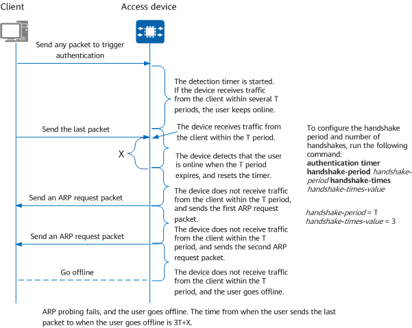

If a user goes offline but the access device and RADIUS server do not detect this event, the following problems may occur:
- The RADIUS server still performs accounting for the user, causing incorrect accounting.
- An unauthorized user can use this user's IP address and MAC address to access the network.
- If the access device and RADIUS server do not detect the logout event of many users, these users continue to occupy user specifications, meaning that other users may fail to access the network.
To avoid such problems, the access device needs to detect the user logout immediately, delete the user entry, and notify the RADIUS server to stop accounting for the user.
The Access Device Controls User Logout
You can enable the access device to control user logout using either of the following methods:
- Run the cut access-user command on the access device to disconnect a specified user.
- Configure user detection on the access device to check whether a user is online. If the user does not respond within a specified period, the access device considers the user offline and deletes the user entry.
If an administrator detects that an unauthorized user is online or wants a user to go offline and then go online again for testing purposes, the administrator can run a command on the access device to disconnect the user. For a user in normal access state, the access device checks the user state through ARP probing. If the access device detects that the user goes offline, it disconnects the user and deletes the user entry.
Figure 1 User logout detection process (using three handshakes as an example)
- The user sends a packet to trigger MAC address authentication through the client, and the detection timer starts.
- If the access device receives traffic from the client within several T periods, it determines that the user is online.
- The user sends the last packet. If the access device receives traffic from the client when the current T period ends, the access device determines that the user is online and resets the detection timer. Assume that the handshake period is T and the number of handshakes is 3 (configured using the authentication timer handshake-period handshake-period handshake-times handshake-times-value command), that is, handshake-period is T and handshake-times-value is 3. In the following situations, the access device deletes the user entry and logs out the user.
- If the access device does not receive traffic from the client within the first T period, the access device sends the first ARP request and the client does not respond.
- If the access device does not receive traffic from the client within the second T period, the access device sends the second ARP request and the client does not respond.
- If the access device does not receive traffic from the client after the third T period, ARP probing fails and the access device deletes the user entry.
The RADIUS Server Controls User Logout
The RADIUS server controls user logout using either of the following methods:
- Sends a Disconnect Message (DM) to the access device to disconnect a user.
- Uses the standard RADIUS attributes Session-Timeout and Termination-Action. Session-Timeout specifies the online duration timer value of a user. If the value of Termination-Action is set to 0, the user is disconnected when the online duration timer expires.